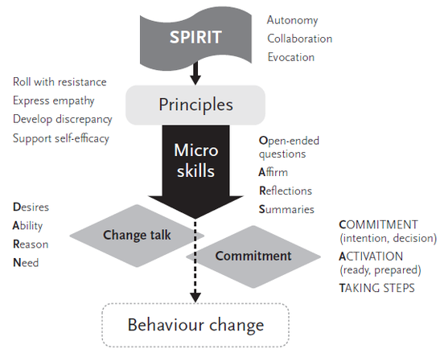
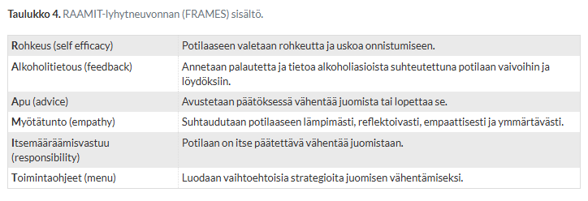
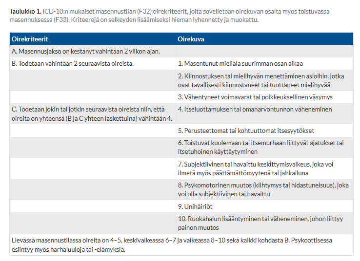
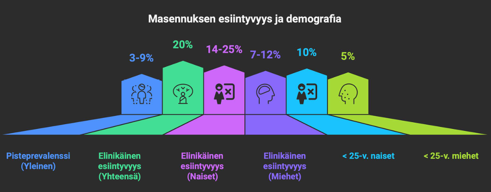
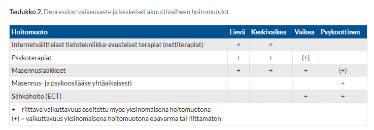

Kappale 5 2023
5.1 Blokki 1
Ei suoria tehtävänantoja, annettu vain kysymysten aiheet ympäripyöreästi. Kysymysten aiheita käsitellään jo muissa yhteyksissä, joten ei oteta tähän blokin 1 kysymyksiä ollenkaan.
5.2 Blokki 2
5.2.1 Psykoosilääkehoidon aikainen painon nousu sekä rasva- ja sokeriaineenvaihdunnan häiriö
- Kuvaa mekanismeja kyseisten muutosten taustalla
- Painon nousun ja rasva- sekä sokeriaineenvaihdunnan häiriön merkitys potilaan ennusteelle
- Terveyskeskuksen vastaanotollesi tulee 35-v. skitsofreniaa sairastava potilas, jonka psykoosilääkehoitoon on tehty muutos eli siirrytty olantsapiinin 14 viikkoa sitten. Annos on nyt 15 mg iltaisin ja muuna lääkityksenä on essitalopraami 10 mg/vrk ja oksatsepaami 15 mgx 2-3 /vrk tarv. Potilas on somaattisesti terve. Vaste psykoosisairauden oireisiin on kohtalaisen hyvä, mutta aiemmin normaalipainoinen potilas on huolestunut painon noususta ja kertoo lihonneensa noin 7 kg olantsapiini-hoidon aloittamisen jälkeen. Miten vastaat potilaan huoleen ? Kuvaa hoitolinjauksiasi eli miten toimit tässä tilanteessa?
Metaboliset haittavaikutukset (esim. painonnousu, dyslipidemia, hyperglykemia) ovat haittavaikutuksina yleisempiä epätyypillisille antipsykooteille (suurin riski klotsapiinilla ja olantsapiinilla) ja harvinaisempia tyypillisillä antipsykooteilla.
Antipsykoottien haittavaikutusprofiilit perustuvat niiden likaiseen reseptoriaffiniteettiprofiiliin; useimmiten oireet johtuvat reseptorien salpauksesta. Epätyypilliset salpaavat tehokkaasti serotoniinireseptoreita (5-HT2A ja 5-HT2C) sekä H1-reseptoreita. H1-salpaus aiheuttaa sedaatiota (vähentää fyysistä aktiivisuutta) ja nostaa ruokahalua. 5-HT2AC-salpaus heikentää kylläisyyden tunnetta ja siten nostaa ruokahalua. Nämä vaikutukset ovat tärkeimmät tekijät painoa nostavan efektin taustalla. Mahdollisesti myös muskariinisalpaus voi sedaation kautta olla painonnousun osatekijä.Metabolisilla häiriöillä on merkittävä vaikutus potilaan pitkäaikaiseen ennusteeseen, kuten ihan yleisestikin niillä on terveillekin ihmisille. Psykoosisairauksia sairastavien elinajanodote on keskimäärin 10–15 vuotta lyhyempi, ja merkittävä osa tästä johtuu kardiometabolisista sairauksista. Riskin nousu ei suoraan selity lääkkeillä, vaan psykoosisairaudet muutenkin häiritsevät itsestä huolehtimista ja riski voi ihan geneettisistäkin syistä olla koholla.
Painon nousu myös on tärkeä tekijä heikon hoitomyöntyvyyden taustalla. Useat potilaat lopettavat lääkityksen, koska eivät halua lihota ja lääkehoidon keskeytyminen johtaa helposti psykoosin uusiutumiseen, sairaalahoitojaksoihin ja taudin kroonistumiseen.
Lihavuus ja vähentynyt aktiivisuus myös lisää sosiaalista stigmaa, laskee itsetuntoa ja voi aiheuttaa mm. masennusoireita. Tämä vaikeuttaa potilaan kuntoutumista, työllistymistä ja sosiaalisten suhteiden ylläpitämistä.Omatoimisesti lääkettä ei kannata lopettaa tai vaihtaa, vaikka potilas tätä toivoisi. Voi kyllä kertoa, että painonnousu on valitettavan yleinen haitta olantsapiinihoidossa, erityisesti hoidon alkuvaiheessa. Kannattaa kuitenkin korostaa myös, että lääkkeellä on ollut hyvä vaste psykoosioireisiin, mikä on tärkeä tekijä hoitoa suunniteltaessa.
Kannattaa mitata sokeriarvot, lipidit, maksa-arvot, paino, vyötärönympärys, kysellä päihteidenkäytöstä ja yleisesti elämäntavoista.
ESH:n konsultaatio on tarpeen ja heidän kanssaan selvitellään vaihtoehtoja. Keskustelusta huolimatta elintapainterventiot (uni, ravinto, liikkuminen, stressin hallinta) tärkeää. Mahdollisesti voidaan miettiä mm. metformiinia (usein ensilinjan, vaikka verensokeriarvot olisivatkin normaalit) tai GLP-1-agonistia tueksi sokeriarvojen ja painon hallinnassa. Lääkevaihto tai annoksen säätely myös ehkä mahdollista, mutta tämä ESH:n konsultaation perusteella.5.2.2 Yrittäjä väsymyksen takia vastaanotolle
Potilas on 28-vuotias yrittäjä, joka hakeutuu hoitoon väsymyksen, aloitekyvyttömyyden ja pahoinvoinnin takia. Hän on avioliitossa ja hänellä on kaksi pientä lasta (1 ja 3 vuotiaat). Hän omistaa nuorten muotivaatteita myyvän firman, joka on menestynyt hyvin. Anamneesia ottaessa käy selville, että hän on aikaisemmin kärsinyt masennuksesta 25- vuotiaana, mutta ei silloin hakeutunut hoitoon. Oireet laukesivat työstressin yhteydessä, kestivät noin kuukauden ja hävisivät sitten ilman hoitoa. Kolmisen kuukautta ennen nyt hoitoon hakeutumistaan hänellä oli jakso, jolloin hän koki voivansa poikkeuksellisen hyvin. Hän itse ajattelee sen johtuneen siitä, että bisnes tuolloin luisti erityisen hyvin. Hän oli täynnä energiaa ja hän nukkui vain nelisen tuntia yössä. Hänen alkoholin käyttönsä lisääntyi ja hän rupesi viettämään öitä yökerhoissa. Erään tällaisen illan jälkeen hän petti vaimoaan yökerhossa tapaamansa naisen kanssa. Tämän positiivisen mielentilan vallitessa hän kulutti paljon rahaa ja hurjasteli usein autollaan nopeusrajoituksista piittaamatta. Tämä jakso kesti kolmisen viikkoa ja sen jälkeen hänen vointinsa huononi. Statuksessa toteat alavireisen, mutta asiallisen miehen. Oireina mielialan laskua, aloitekyvyttömyyttä, keskittymisvaikeuksia, aamuyön heräilyä, itsesyytöksiä, anhedoniaa ja passiivisia kuolemaan liittyviä ajatuksia.
- Tärkeimmät erotusdiagnostiset tutkimukset
- Todennäköisin diagnoosi
- Hoidon linjaukset: perusterveydenhuollossa? erikoissairaanhoidossa?
Anamneesi viittaa selvästi mielialahäiriön kaksisuuntaiseen luonteeseen, koska potilaalla on ollut sekä depressiivinen jakso että hypomaniaan viittaava jakso. Tavoitteena on sulkea pois somaattiset ja päihdeperäiset syyt sekä varmistaa mielialahäiriön luonne.
Somaattiset perustutkimukset:
Päihteiden käyttö:
Psykiatrinen selvittely:
Perusterveydenhuollossa tärkeimpänä on psykoedukaatio aiheesta. Arvioidaan myös akuutin tilanteen vakavuus ja akuutti itsemurhariski. Sairauslomaa voi kirjoittaa, vaikka potilas on yrittäjä.
Lääkkeiden aloittaminen perusterveydenhuollossa kaksisuuntaisessa ei yleensä tapahdu omin toimin, vaan vaatii psykiatrin konsultaation. Tarkempi hoitosuunnitelma laaditaan ESH:ssa ja on hyvä lähettää potilas sinne kiireisesti tai itsemurhariskistä riippuen jopa päivystyksellisesti. ESH:ssa voidaan toteuttaa mielialaa tasaava lääkitys (esim. lamotrigiini (joka ei toimi maniavaiheissa, mutta nyt masennusvaiheessa hyvä ja hyvä relapsien estämisessä), litium, valproaatti tai karbamatsepiini). Psykoterapia myös tärkeää. Seuranta pitkäaikaista.5.2.3 Hengenahdistusta ja tykyttelyä
Terveyskeskusvastaanotollesi tulee 30-vuotias nainen, jonka sairauskertomuksessa on vain muutamia aiempia käyntejä ylähengitystieinfektioiden ja virtsatietulehduksen takia. Nyt ongelmana ovat kohtaukset, joihin liittyy hengenahdistusta ja sydämentykytystä. Kohtauksia on ollut noin puolen vuoden ajan. Potilas ei alkuun ollut asiasta kovinkaan huolissaan, kun kohtauksia oli noin kerran kuussa ja ne kestivät vain muutaman minuutin. Nyt tilanne on toinen: kohtauksia on viimeisen kuukauden ajan tullut 1 – 2 kertaa viikossa ja ne kestävät n. 10 min. Potilas on ruvennut miettimään, olisiko hänen sydämessään vikaa, kun isoisäkin aikanaan kuoli sydäninfarktiin.
- Mikä on työdiagnoosisi?
- Mitä sinun tulee selvittää päästäksesi diagnostiikassa ja hoitosuunnitelman teossa eteenpäin?
Oirekuva vaatii huolellisen somaattisen ja psyykkisen erotusdiagnostiikan - ihan myös sen takia, että lääkäri voi varmistua asian laadusta, mutta että myös potilas saa luotettavan selityksen oireilleen.
Ensisijainen työdiagnoosini on paniikkihäiriö, koska oireet tulevat ja menevät kohtauksina, jotka kehittyvät nopeasti ja kestävät tyypillisesti n. muutamia minuutteja - puoli tuntia. Sydämentykytys ja hengenahdistus ovat paniikkikohtauksen ydinoireita. Kohtausten tiheneminen ja niiden pelko (ennakoiva ahdistus) sopivat paniikkihäiriön kehittymiseen. Potilas on myös nuori nainen, jolla ei ole aiempia somaattisia perussairauksia.Myös kohtauksittaiset rytmihäiriöt ja muu somatiikka tulee ottaa huomioon, joten hyvä erotusdiagnostiikka on paikallaan.
Anamneesin tarkentaminen on tärkeää:
Kliininen tutkimus:
Perustutkimukset:
Jos oirekuva sopii parhaiten paniikkihäiriöön, niin ei tarvita Holteria, mutta tarvittaessa pidempiaikainen rytmirekisteröinti / tapahtumatallennin. Jos hengenahdistus on hallitseva oire ja liittyy mm. rasitukseen, voidaan lyhyellä PEF-seurannalla poissulkea alkava rasitusastma.
Paniikkioireiden aiheuttamaa haittaa voi arvioida kyselemällä toimintakyvystä ja asioiden välttelystä yms. Tukena PDSS-SR-kyselylomake.
Hoitona ensilinjassa kognitiivis-behavioraaliset psykoterapiat ja tarvittaessa SSRI-lääkkeet tukena kohtausten ehkäisyssä (lääkkeen valintaan vaikuttavat potilaan somaattinen tila, lääkkeen mahdollisten haittavaikutusten luonne, samanaikainen depressio, ennakoivan ja yleistyneen ahdistuneisuuden voimakkuus, välttämiskäyttäytymisen esiintyminen ja toimintakyvyttömyyden voimakkuus). On syytä aloittaa hoito pienellä aloitusannoksella, 25–50 % hoitoannoksesta ja kasvattaa lääkeannosta hoitoannoksen suuruiseksi seuraavien 2–4 viikon aikana (nopeasti aloitettu hoitoannos voi pahentaa ahdistuneisuutta alussa).
5.2.4 Rauhoittavaa lääkettä alkoholista nauttivalle
Vastaanotollesi terveyskeskukseen tulee 52-vuotias rakennustyömies, joka on jäänyt työttömäksi vuosi sitten. Tällöin potilas on käynyt toisen lääkärin vastaanotolla masennusoireiden, ahdistuneisuuden ja univaikeuksien vuoksi. Potilaalle on kirjoitettu reseptille essitalopraami 10 mg 1x1, oksatsepaami 15 mg 1x3 ja tematsepaami 20 mg 1x1. Näistä potilas on hakenut apteekista ainoastaan oksatsepaamin ja tematsepaamin. Potilas on varannut nyt vastaanottoajan toivoen uusia reseptejä rauhoittavista lääkkeistä. Haastattelussa käy nopeasti ilmi, että työttömäksi jäämisen jälkeen potilaan alkoholinkäyttö on lisääntynyt ja viimeisen puolen vuoden ajan hän on juonut päivittäin, arkipäivisin 8 ravintola-annosta olutta päivässä ja viikonloppuisin kahtena päivänä 20 ravintola-annosta olutta päivässä. Jos potilas on yrittänyt olla ilman alkoholia, hänen olonsa on ollut ahdistunut ja täriseväinen. Tällöin hän on ottanut reseptille määrättyjä rauhoittavia lääkkeitä määrättyä suuremmilla annoksilla. Muuten hän ei ole lääkkeitä käyttänyt. Nyt potilas on saanut työtarjouksen ja kokee tarvitsevansa lisää rauhoittavia lääkkeitä, jotta pystyisi vähentämään alkoholin käyttöä ja ottamaan työpaikan vastaan. Potilas kertoo, että haluaisi lopettaa alkoholinkäytön arkipäivisin, mutta juoda viikonloppuisin edelleen aiempaan tapaan, kuten on tehnyt ennen työttömäksi jäämistään.
- Mitä kertoisit potilaalle alkoholinkäytön riskirajoista?
- Minkälaista hoitoa tarjoaisit potilaalle?
- Miten suhtautuisit potilaan toiveeseen rauhoittavasta lääkityksestä ja miten perustelisit suhtautumisesi potilaalle?
Hoidon tavoitteena on alkoholiriippuvuuden hoito ja turvallinen vieroitus. Motivoivan keskustelun kautta tulee löytää se, että nykyisellä juomisen tasolla työkyky ja terveys ovat vaarassa ja alkoholinkäyttö on lopetettava.
Vieroitushoidossa vaihtoehtoja ovat avohoitovieroitus ja laitosvieroitus. Potilaan sekapäihdekäyttö ja vieroitusoireet puoltavat osastohoidossa toteutettavaa vieroitushoitoa. Vieroituksessa voidaan käyttää lyhytaikaisesti bentsodiatsepiineja lääkärin valvonnassa. Samalla potilaan käyttämiä bentsoja myös sitten lopulta ajetaan alas. Jatkohoidossa on tärkeää psykososiaalinen hoito (A-klinikka, AA) ja lääkehoito (esim. disulfiraami). Keskustelen uudelleen myös SSRI-lääkityksen aloittamisesta (essitalopraami), mutta tätä voidaan miettiä sitten katkon jälkeenkin. Rauhoittavat lääkkeet eivät hoida taustalla olevaa masennusta.Rauhoittavan lääkkeen toiveeseen tulee suhtautua siten, että se ei nyt ole ratkaisu potilaalle. Alkoholin ja bentsojen yhteiskäyttö on hengenvaarallista (lamaannuttaa hengitystä) ja muutenkin bentsojen pitkäaikaiskäyttö saattaa lisätä tapaturmia ja aiheuttaa muistihäiriöitä, pahentaa ahdistusta, huonontaa unta, ja kuten on jo päässyt käymään, aiheuttaa riippuvuutta.
Vieroituksessa bentsoja annetaan kontrolloidusti ja lopulta ajetaan alas. En voi nyt määrätä jatkuvaa rauhoittavaa lääkitystä kotiin nykyisessä tilanteessa.5.2.5 M1
Työskentelet yhteispäivystyksessä, jonne saapuu äitinsä saattamana 17-vuotias nuori nainen. Vastanottohuoneessa äiti purskahtaa välittömästi itkuun. Hän kertoo nuoren opiskelevan toista vuotta merkonomiksi. Vielä ensimmäisenä lukuvuonna nuori tapasi säännöllisesti ystäviään ja kävi erilaisissa riennoissa – äidin mukaan välillä turhankin aktiivisesti. Kesällä hän kävi kavereidensa kanssa festareillakin, mutta syksyn myötä nuori löytyi viikonloppuiltaisinkin entistä useammin omasta huoneestaan. Äidin kysyessä asiasta nuori oli lähinnä todennut, ettei kavereilla ole aikaa hänen kaltaiselleen luuserille.
Äidin kannustuksesta huolimatta nuori muuttui vähitellen entistä passiivisemmaksi. Äidin kyselyihin nuori kuitenkin vastasi koko ajan ärtyisämmin, joten äidistä tuntui lopulta viisaammalta jättää hänet rauhaan. Hymähtäen äiti kertoo, kuinka aiemmin heidän tavanomainen riidanaiheensa oli nuoren meikkeihin käyttämä omaisuus, mutta nyt hän on suurimman osan ajasta meikittä ja hiuksetkin näyttävät pesemättömiltä. Muutos on tuntunut niin dramaattiselta, että äiti on useasti ehdottanut avun hankkimista, mistä nuori on ehdottomasti kieltäytynyt.
Nyt päivystykseen tuloa edeltävästi äiti kertoo nuoren huonetta siivotessaan löytäneensä hänen patjansa alta kourallisen lääkkeitä. Äiti sairastaa epilepsiaa ja muistelee aiemmin ihmetelleensä, että lääkkeitä oli vähemmän kuin mitä hän ajatteli, ja asia palasi mieleen hänen nähdessään tutut tabletit. Äidin otettua asian puheeksi nuori raivostui asiasta. Vaatiessaan haluavansa tietää, miksi nuori oli kerännyt lääkkeitä, nuori oli ärähtänyt aikovansa tappaa itsensä ja mennyt oven paiskaten huoneeseensa. Pitkän neuvottelun jälkeen nuori tuli huoneestaan myrskyn merkkinä sanoen ”No, lähdetään sitten sinne päivystykseen”.
Haastattelussa nuori ei juuri ota katsekontaktia ja suhtautuu sinuun passiivis-aggressiivisesti. Hän vastailee kysymyksiin lyhytsanaisesti, mutta oma-aloitteisesti ei tuota. Kerronta on johdonmukaista etkä totea psykoottisuuteen viittaavaa. Nuori ei kiistä äidin kertomia asioita, mutta hän ei tunnista mielialaansa masentuneeksi. Kysymyksiisi itsetuhoisista ajatuksista ja käyttäytymisestä nuori ei vastaa, mutta itsemurhasuunnitelmasta kysyttäessä ärähtää sellaisen kyllä olevan, mutta hän ei aio kertoa siitä mitään. Kerrot olevasi huolissasi nuoresta, mutta hän tyrmää kaikki ehdotuksesi hoitovaihtoehtojen suhteen ja vaatii päästä lähtemään kotiin.
Päätät laatia nuoresta M1-lähetteen. Täytä liitteenä olevaan M1-lähetteeseen kaikki tarpeelliset tiedot siten, että lähete on juridisesti pätevä ja johdonmukainen. Voit täydentää annettuja esitietoja ja havaintoja sen verran kuin katsot tarpeelliseksi. Palauttamasi M1- lähete toimii tenttivastauksenasi.
Täytetty M1-lähete. Huomaa, että kohdan 4 “Hoidon tarve”-osiossa ei tarvitse täyttää kuin vain yksi peruste, ja olen nyt valinnut täyttää “Oman terveyden tai turvallisuuden vakava vaarantuminen”.
Tenttivastauksen ulkopuolelta taas M1-kertausta
Potilas on alaikäinen, joten pitää soveltaa alaikäisten tahdosta riippumattoman hoidon kriteerejä:
- Hänellä on vakava mielenterveyden häiriö tai mielisairaus
- Hän on hoidon tarpeessa vakavan mielenterveyden häiriön tai mielisairauden vuoksi siten, että hoitoon toimittamatta jättäminen olennaisesti pahentaisi hänen sairauttaan tai vakavasti vaarantaisi hänen terveyttään tai turvallisuuttaan tai vakavasti vaarantaisi muiden henkilöiden terveyttä tai turvallisuutta
- Mitkään muut mielenterveyspalvelujen vaihtoehdot eivät sovellu käytettäviksi
Lääketieteellisesti mielisairaudella tarkoitetaan sellaista vakavaa mielenterveyden häiriötä, johon liittyy selvä todellisuudentajun häiriintyminen ja jota voidaan pitää psykoosina. Nykyisen tautiluokituksen mukaan tällaisena tilana voidaan pitää deliriumtiloja, skitsofrenian eri muotoja, elimellisiä ja muita harhaluuloisuustiloja, psykoottisia masennustiloja, kaksisuuntaisia mielialahäiriöitä, muistisairauksien vaikea-asteisia ilmenemismuotoja sekä muita psykooseja kuten orgaaniset psykoosit ja päihteiden käytön aiheuttamat psykoottiset tilat.
Alaikäisellä riittää myös kuitenkin vakava mielenterveyden häiriö. Nyrkkisääntö: Voi olla lähes mikä tahansa mielenterveyden häiriö, joka olennaisesti vaarantaa nuoruusiän kehityksen ja/tai aiheuttaa merkittävän toimintakyvyn aleneman. Kannattaa myös huomioida, että akuutit psykoottistasoiset oireet tulkitaan alaikäisellä käytännössä aina vakavaksi mielenterveyden häiriöksi -> vaikka alaikäinen potilas olisi psykoottinen, hänellä voi aina käyttää perusteena vakavaa mielenterveyden häiriöitä (eikä mielisairautta).
5.3 Blokki 3
Yksi sama bentsoja käyttävä erektiohäiriöpotilas kuin 2025, joten ei sitä tässä uudestaan.
5.3.1 Motivoiva haastattelu alkoholin vähentämiseksi
45-vuotias mies tulee terveyskeskusvastaanotollesi verenpainekontrolliin. Lääkityksestä huolimatta paineet ovat turhan korkeat. Potilas kertoo olevansa varsin stressaantunut työstä ja nukkuvansa huonosti. Kartoittaessasi potilaan elintapoja kyselet hänen alkoholinkäytöstään. Potilas kertoo viime aikoina vähentäneensä käyttöä, joka nykyisellään on keskimäärin kolme keskiolutta päivässä ja lisäksi yksi viinipullo viikonloppuisin. Lomalla voi sitten mennä vähän enemmän, mistä viime kesänä tuli vaimon kanssa riitaa. Vaimon vaatimuksesta potilas piti tänä vuonna tipattoman tammikuun.
Miten voit motivoivaa haastattelua käyttäen motivoida potilasta vähentämään alkoholinkäyttöään?
Motivoiva haastattelu perustuu siihen, että potilaan kanssa ollaan yhteistyökumppaneita eikä vain luennoida ja ohjata tyrannimaisesti potilasta muuttamaan toimintaansa. Tavoitteena on auttaa häntä itse oivaltamaan muutoksen tarpeen ja vahvistaa hänen motivaatiotaan (spirit ovat motivational interviewing = ACE = Autonomy, Collaboration, Evocation).
Motivoivan haastattelun ydinperiaatteet ovat (muistettavissa DARES-muistisäännöstä):
- Ristiriita nykyisen käyttäytymisen ja tärkeiden tavotteiden välillä motivoi
- Potilaan tapauksessa esim. kysellään hänen tavotteistaan ja peilataan niitä juomiseen. Potilaalle on varmasti tärkeää stressin vähentäminen ja unen parantaminen ja samalla voidaan antaa psykoedukaatiota alkoholin haitoista varsinkin näiden suhteen. Myös jos potilaalla on huolta verenpaineen laskusta, niin tämäkin on hyvä ristiriitakohta.
- Väittely ei ole tuottavaa vuorovaikutusta ja puolustusasemaan asettautuminen vähentää todennäköisyyttä muutokselle
- Saa potilas sanomaan ”kyllä”, esimerkiksi kysymällä ajatteleeko keskustelun olevan hyödytön
- Näkökulmaa voi muuttaa, älä kuitenkaan tyrkytä uutta näkökulmaa. Tutki vastahakoisuutta yhdessä potilaan kanssa.
- Kuunnellaan aktiivisesti ja heijastetaan potilaan sanomaa, esim. ”Kuulostaa siltä, että työsi on tällä hetkellä todella kuormittavaa.” Yritetään ymmärtää potilaan näkökulmaa ilman tuomitsemista.
- Usko muutokseen on tärkeä motivaattori
- Potilashan on jo saanut vähennettyä; se toimii hyvänä esimerkkinä pystyvyydestä ja tätä kannattaa tukea tuomalla se esiin
Keskustelun aikana ydinperiaatteiden tukena käytettävät perustekniikat (micro-skills) voi muistaa OARS-muistisäännöstä: Open-ended questions, Affirmations, Reflective listening, Summaries.
- Vältä kysymys-vastaus-ansaa, jossa lääkäri kysyy – potilas vastaa kyllä/ei. Lääkäristä muodostuu tässä tilanteessa aktiivinen “kyselykone” ja potilas passivoituu.
- Toteamuksia, jotka huomauttavat potilaan vahvuuksista. Auttavat luomaan hyvää suhdetta ja potilaat alkavat näkemään itseään paremmassa valossa.
- Älä keksi keksimällä positiivisia asioita tai valehtele. Potilaan tapauksessa esim. juomisen jo onnistunut vähentäminen ja tipattoman tammikuun onnistuminen.
- Esitä lisäkysymyksiä, toista toisin sanoin kuulemaasi, käytä metaforia
- “Annas kun vielä tarkistan tämän asian, että olen ihan varmasti olen tajunnut tämän oikein…” “korjaa jos olen väärässä…”
- Yhteenvedot kommunikoivat kiinnostusta aiheeseen ja luovat varmuutta keskustelun molemmille osapuolille siitä, että molemmat ymmärtävät toisiaan
Keskustelun koko tavoite on saada aikaan muutospuhetta (“change talk”). Tätä on kahta tyyppiä: “Preparatory Change Talk”, jota usein vain kutsutaan muutospuheeksi ja “Implementing Change Talk”, jota usein kutsutaan sitoutumispuheeksi. Muutospuhetta on kaikki se potilaan puhe, joka koskee syitä, halua, kykyä ja tarvetta muutokseen. Se valmistelee ja ennakoi sitoutumispuhetta eli muutokseen aktivoitumista. Sitoutumispuheen voimistuminen taas ennakoi tulevaa käyttäytymisen muutosta, kuten päihteiden käytön lopettamista.
Muutospuheen voi huomata siis seuraavista piirteistä (DARN)
- Haluan lopettaa juomisen / vähentää juomista.
- Tätä puhetta auttaa herättämään kysymykset, kuten “Miksi haluat tehdä tämän muutoksen?”
- Uskon pystyväni pysymään raittiina / vähentämään juomista.
- Tätä puhetta auttaa herättämään kysymykset, kuten “Miten pystyisit tehdä tämän muutoksen?”
- Jos lopetan juomisen, niin parisuhteeni menisi paremmin.
- Tätä puhetta auttaa herättämään kysymykset, kuten “Mikä olisi yksi hyvä syy muutoksen tekemiselle?”
- Minun pitää lopettaa juominen / vähentää juomista
- Tätä puhetta auttaa herättämään kysymykset, kuten “Kuinka tärkeä tämä muutos olisi esim. asteikolla 0-10 ja miksi?”
Muutospuheeseen vastataan vahvistamalla, summaamalla ja selkiyttämällä arvoja/ambivalenssia tilanteesta. Tämä voi johtaa sitoutumispuheeseen, jonka tunnistaa seuraavista piirteistä (CAT)
- Aion lopettaa juomisen.
- Tätä puhetta auttaa herättämään kysymykset, kuten “Mitä aiot tehdä?”
- Potilas kuvaa tarkalleen mitä aikoo tehdä: “Aion heittää huomenna kaikki täydet tölkit ja pullot pois”
- Tätä puhetta auttaa herättämään kysymykset, kuten “Mitä olet valmis tai myöntyväinen tekemään?”
- Potilas kertoo jo ottaneensa konkreettisia askeleita: “Olen jo vähentänyt juomistani puoleen.”
- Tätä puhetta auttaa herättämään kysymykset, kuten “Mitä olet jo tehnyt?”

Alkoholinkäytön vähentämisessä hyödynnetty lyhytneuvonta (mini-interventio) siis myötäilee motivoivan haastattelun piirteitä, mutta se vain tiivistää periaatteet hieman eri muistisäännöllä: RAAMIT. Tämänkin kautta voisi hyvin rakentaa tenttivastauksen.

5.3.2 Masennuksen psykoedukaatio
Vastaanotollesi tulee 30-vuotias naisoletettu, joka epäilee itsellään hypotyreoosia ja/tai raudanpuutetta. Jo n. 3 kk ajan hänellä on ollut vetämättömyyttä, uupumisherkkyyttä, raajat tuntuvat painavilta, ja väsymys ei väisty nukkumalla. Tutkit hänet hyvin, eikä laboratoriokokeissa ole poikkeavuuksia. Sen sijaan masennuksen kriteerit täyttyvät ja oireet vaikuttavat jo merkittävästi potilaan toimintakykyynkin; asetat hänelle keskivaikea-asteisen masennuksen diagnoosin. Potilaan on vaikea hyväksyä tätä diagnoosia, sillä vaikka hän tarkemmassa haastattelussa tunnistaa myös merkittävää vaikeutta kokea mielihyvää asioista, jotka aiemmin hänelle sitä tuottivat, hän ei koe varsinaisesti olevansa surullinen tai alakuloinen. Hän kertoo, että häntä kyllä ”tympii” kaikki, eikä mikään kiinnosta. Saat vaikutelman, että potilas on vaativa itseään (ja myös muita) kohtaan, mikä on osaltaan voinut vaikuttaa kuormittumisen kautta depression kehittymiseen. Potilas suhtautuu kriittisesti ehdottamaasi mielialalääkitykseen (sertraliini). Suosittelemaasi nettiterapiaa hän jää hieman myönteisemmällä asenteella harkitsemaan. Mitä kerrot potilaalle:
- Masennuksen oireiden kirjosta
- Masennuksen yleisyydestä
- Masennuksen ennusteesta, ml. uusiutumisriskistä
- Masennuksen hoidosta, sen tehokkuudesta, ja suosittelemasi mielialalääkkeen tyypillisistä haitoista
Tärkeimpien oireiden kirjon voi muistaa diagnostisten kriteerien (ICD-10) kautta (tukena muistisääntö SIGECAPS tai vielä paremmin DIE-SGWCAPS)
- Potilaan tunnevire on suurimman osan aikaa syvästi alakuloinen
- Mitä syvemmin mieliala on masentunut, sitä pysyvämpi jatkuva masennuksen tila on ja sitä kykenemättömämpi henkilö on kohdistamaan huomiotaan muihin asioihin ja syrjäyttämään mielialaa
- HUOM! potilastapauksen suhteen: Mielialan ei siis ole pakosti olla tunnistetusti alentunut, jotta masennuksen voi diagnosoida, koska tämän listan kolmesta ensimmäisestä tulee olla vähintään kaksi todettavissa. Jotkut (varsinkin nuoret) voivat kokea masennuksen enemmänkin ärsyyntyneisyytenä kuin alentuneena mielialana!
- Potilas on menettänyt kykynsä saada tyydytystä tai kokea mielihyvää asioista, jotka hänelle ovat sitä aiemmin tavallisesti tuottaneet. Aiemmin kiinnostaneet asiat eivät tunnu enää kiinnostavilta.
- Lievemmissä tapauksissa mielihyvän kokemukset ovat vaimentuneet; vaikeammissa tapauksissa mielihyvän menetys on täydellinen
- Potilas kokee olevansa jatkuvasti väsynyt. Pientenkin tekojen tekeminen, lieväkin fyysinen ponnistus tai vähäinenkin psyykkinen aktiivisuus tuntuu raskaalta ja vaatii huomattavasti voimia. Väsymys voimistuu pienenkin ponnistelun jälkeen.
- Tämä voi ilmetä iltayön nukahtamisvaikeutena, unen pinnallisuutena ja katkonaisuutena, aamuyön valvomisena tai näiden yhdistelminä. Joillakin potilailla unihäiriö ilmenee hypersomniana eli liiallisena nukkumisena eri vuorokaudenaikoihin.
- Potilaan ajatukset keskittyvät oman persoonan ja omien tekojen kritiikkiin ja väheksymiseen sekä vähäisiin tai olemattomiin rikkomuksiin ja erehdyksiin liittyviin syyllisyydentunteisiin. Masennuksen äärimmäisissä muodoissa syyllisyys on usein harhaluulon asteista ja luonteeltaan psykoottista.
- Potilaan luottamus omaan kykyynsä selviytyä elämässään on selvästi alentunut, ja potilas on menettänyt arvonsa omissa silmissään
- Potilas on hyvin epävarma ja epäröivä tilanteissa, joissa pitäisi tehdä arkisia päätöksiä ja joista hän tavanomaisesti selviytyy helposti. Hänellä on usein vaikeuksia keskittyä esimerkiksi lukemiseen tai muuhun tarkkaavuuden kohdentamista vaativaan toimintaan
- Masentunut potilas on tavallisesti menettänyt ruokahalunsa ja voi kokea ruuan jopa vastenmielisenä. Ruokahalun menetykseen liittyy myös selvästi todettavissa oleva painon lasku. Joidenkin potilaiden ruokahalu on selvästi lisääntynyt ja paino on selvästi noussut ruokahalun kasvun vuoksi.
- Psykomotorinen hidastuminen eli retardaatio ilmenee kaiken psykomotorisen toiminnan silminnähtävänä hitautena, jähmeytenä, äärimuodoissaan pysähtyneisyytenä. Olemukseltaan potilas voi vaikuttaa selvästi vanhentuneelta ja ilmeettömältä.
- Psykomotorinen kiihtyneisyys, agitaatio, puolestaan tarkoittaa tuskaisuuden tunteeseen liittyvää motorista levottomuutta, joka voi ilmetä esimerkiksi raajojen levottomina ja tarkoituksettomina liikkeinä, pakonomaisena kävelynä ja tuskaisena huokailuna.
- Potilaan ajatukset kohdistuvat vahvasti kuolemaan ja muihin pessimistisiin teemoihin. Hän voi passiivisesti toivoa kuolemaa tai aktiivisesti harkita itsemurhan tekemistä. Hän on kyseisen masennusjakson aikana voinut yrittää itsemurhaa tai tehdä suunnitelman sen toteuttamiseksi.

Väestötutkimusten perusteella kliinisesti merkittävän depression vuosiesiintyvyys aikuisväestössä ja nuorilla on noin 5–7 %. Elinikäinen esiintyvyys on n. 20%. Depressiot ovat naisilla noin 1,5–2 kertaa yleisempiä kuin miehillä.
Kyseessä on siis yleinen ongelma! Masennus on yksi yleisimmistä syistä hakeutua lääkäriin Suomessa.

Useimmat, arviolta ainakin 2/3, saavat selvän vasteen hoidosta suhteellisen nopeasti ja tyypillisesti hoidon piiriin tulevat masennustilat kestävät muutaman kuukauden ajan. Joillakin potilailla oireyhtymä jälkioireineen voi kestää vuosien ajan; tällaisia kroonisia masennustiloja on alle 10 % kaikista psykiatrisen erikoissairaanhoidon masennustiloista.
Depressioilla on selvä taipumus uusiutua. Suurin osa hoitoa hakevista depressiopotilaista kärsii toistuvasta masennuksesta. Yhden jakson jälkeen riski saada toinen on hieman tilanteesta riippuen noin 50 %. Siksi on tärkeää hoitaa ensimmäinenkin jakso “päätyyn asti”, eli jatkaa hoitoa vielä oireiden poistumisen jälkeen (n. 6 kk), jotta aivojen välittäjäainetasapaino ehtii vakiintua.
Uusiutumisen riski on sitä suurempi, mitä vaikeampi depressio on ja mitä enemmän muita samanaikaisia mielenterveyden häiriöitä potilaalla on. Keskeinen ennustetekijä on myös se, montako masennusjaksoa potilas on elämänsä aikana kaikkiaan läpikäynyt.Keskivaikeassa masennuksessa lääkehoidon ja terapian (kuten ehdotettu nettiterapia) yhdistelmä on tutkitusti tehokkain. Terapia antaa työkaluja muuttaa niitä vaativia ajatus- ja käytösmalleja, jotka altistavat uupumiselle ja masennukselle samalla kun lääketerapia hoitaa biologista puolta ja tukee terapiaa. Lääkehoito on sitä tärkeämpää, mitä vaikeammasta depressiosta on kysymys ja keskivaikeassa depressiossa sitä pääsääntöisesti suositellaan; lievässäkin se on yleensä hyödyksi. Jos potilas absoluuttisesti ei halua lääkehoitoa, niin nettiterapiaa ja tarvittaessa psykoterapiaakin voidaan käyttää yksinkin, mutta se ei ole yhtä tehokasta kuin lääkityksen kanssa.
Noin kaksi kolmasosaa masennuslääkettä säännöllisesti käyttävistä saa selvän vasteen ja noin 40–50 %:lla oireet häviävät melko täydellisesti noin 4–12 viikon aikana. Masennuslääkkeet ovat siis suhteellisen tehokkaita ja erityisen tehokkaita ne ovat yhdistettynä terapiaan.
Sertraliini on SSRI-lääke, joka nimensä mukaan on selektiivinen serotoniinin takaisinoton estäjä. Se tarkoittaa siis sitä, että se lisää serotoniinin määrää hermojen välisissä synapseissa ja siten auttaa mielialan ja stressinsäätelyn kontrolloimisessa. SSRI-lääkkeet ovat tällä hetkellä yleisimmin käytettyjä masennuslääkkeitä ja niitä käyttää arviolta yli 600 000 suomalaista. Lääkkeen vaikutus alkaa yleensä 2–4 viikon kuluessa, joskus hieman myöhemmin.
Lääkevasteet ja -haitat ovat yksilöllisiä ja valinnassa on keskeistä potilaan johto-oireet ja ne haittavaikutukset, joita halutaan erityisesti välttää. Sertraliini kyllä todennäköisesti sopii potilaalle, koska ei ole mitään SSRI-lääkkeiden käytön välttämiseen liittyviä asioita mainittu (esim. vuotohäiriöitä tai valmiiksi seksuaaliongelmia, kuten matalaa libidoa).
Potilaalle tulee mainita yleisistä haittavaikutuksista lääkkeen käytön alussa ja painottaa, että ne menevät suurimmalla osalla ohi 1-2 viikossa. Näitä haittoja ovat mm: pahoinvointi, suolisto-oireet, unettomuus, hikoilu, päänsärky ja lisääntynyt ahdistuneisuus. Noin 10–15 %:lla hoidetuista potilaista oireet johtavat akuuttivaiheessa lääkityksen keskeyttämiseen ja tätä numeroa voisi vähentää painottamalla oireiden ohimenevyyttä.
Yksi tärkeä haittavaikutus/sivuvaikutus mainita on tunteiden latistuminen (turtuneisuus, emotional blunting). Jotkut ihmiset voivat vastata lääkkeeseen siten, että ei enää koe voimakkaita tunteita (niin positiivisia kuin negatiivisiakin) samalla tavalla kuin ennen. Voi tuntua, kun olisi oman elämänsä “katsoja”.
Seksuaalihaitat (naisilla pääasiassa libidon lasku; myös viivästynyt orgasmi) tulee mainita.
Harvinaisempia haittavaikutuksia ovat mm. SIADH ja sen aiheuttama hyponatremia, jo mainitut hyytymishäiriöt ja serotoniinioireyhtymä (levottomuus, voimakas hikoilu, vapina, lihasnykäykset; pääasiassa yliannostustilanteissa tai lääkeaineinteraktioissa). Painoon ne vaikuttavat usein neutraalisti (akuutisti ehkä vähentävät ruokahalua, pitkässä käytössä mahdollisesti hyvin lievää painonnousua).

5.3.3 Lääkeongelma tulosyynä
25-vuotias perheetön mies tulee iltapäivystysvastaanotollesi Hattulan terveyskeskukseen tulosyynä lääkeongelma. Sairauskertomuksessa löytyy aiemmalta yksittäisiä käyntejä ylähengitystieinfektio-oireiden vuoksi, sekä 7kk sitten laadittu M1-lähete. Potilas kertoo, että hän oli puolisen vuotta sitten Hämeenlinnan keskussairaalan psykiatrisella osastolla. Hän kertoo menneensä “jotenkin sekaisin hetkellisesti” työuupumuksen seurauksena. Potilas oli ollut osastolla 4kk ja hoito oli aluksi toteutettu tahdosta riippumattomana hoitona. Potilaan mukaan osastojakso oli “kuolettavan tylsä”, mutta hän kertoo toipuneensa hetkellisestä työuupumuksesta ja “aivopieruistaan” hyvin, ja on jo kyennyt palaamaan ammattiaan vastaaviin töihin rakennusalalle. Kysyttäessä osastojaksoon johtaneista oireista potilas kertoo avoimesti kokeneensa, että hänen ajatuksiaan oli häiritty matkapuhelinverkon säteilykenttiä interferoimalla. Kokemus oli ollut hyvin ahdistava. Potilas naurahtaa nyt kertoessaan, että ajatteli tuolloin suojelupoliisin olleen toiminnan takana, koska potilas oli tehnyt juuri aiemmin turvaluokitettua sähköasennustyötä valtion laitoksessa. Potilas muistelee, että hänestä tuntui siltä, kuin joku olisi varastanut hänen ajatuksiaan ja syöttäneen tilalle vieraita “kunnollisia” ajatuksia. Hassut ajatukset olivat vaivanneet potilasta noin 2-3 kuukauden ajan ennen kuin tilanne oli alkanut rauhoittua. Osastolla oli kokeiltu potilaan mukaan runsaasti erilaisia lääkkeitä, mutta sitten nykyisin käytössä oleva “lääkekuuri” oli auttanut toipumaan työuupumuksen aiheuttamista oireista. Potilas kertoo voineensa nyt hyvin jo pidempään ja työtkin lähteneet sujumaan jo vaikka potilaalle oltiin suositeltu osastolta sairaslomaa.
Potilaalla on käytössä: “klotsapiini 500 mg iltaisin, ketiapiini 200mg aamulla ja illalla ja loratsepaami 2mg kolmasti päivässä”. Käyt läpi potilaan luvalla reseptikeskuksen tiedot, sekä sairauskertomuksesta löytyvän M1-lähetteen, joiden tiedot vastaavat potilaan kertomusta. Osastojakson loppuarviotekstiä ei jostain syystä ole käytettävissä. Laboratoriokokeiden tuloksissa näkyy olevan tiuhaan otetut PVK+T ja Neut, jotka ovat olleet säännönmukaisesti viiterajoissa.
Nyt potilas suunnittelee lähtevänsä talvikaudella 2kk pituiselle “jokavuotiselle perinnematkalle jonnekin lämpimään maahan vähän juhlimaan kavereiden kanssa”. Potilas kertoo, että haluaisi nyt lopettaa lääkityksen, koska hänelle ei suostuttu jostain syystä määräämään yli 1kk kestoista lääkemääräystä. Tämä vaikeuttaa 2kk kestoiselle matkalle lähtemistä. Toisaalta osaston psykiatri oli myös kertonut potilaalle, että lääkkeitä voisi vähentää avohoidossa ja potilas haluaisi nyt näin tehdä. Uupumuskaan ei potilaan mukaan voi uusiutua, koska töissä on sujunut nyt aiempaa paremmin työnantajan viimein tajuttua, ettei potilas pysty työskentelemään kolmella kohteella samaan aikaan. Potilas tuo esille myös kärsivänsä siitä, että aamuisin tyyny on märkä, kun sylkeä erittyy liikaa. Potilaan paino on myös noussut “joku kymmenen kiloa” ja potilas joutuu juomaan “pannullisen kahvia” aamuisin, koska lääke väsyttää. Potilas haluaisi vähintään nyt vaihtaa lääkkeen johonkin toiseen, joka väsyttäisi vähemmän, ja josta saisi pidemmälle ajalle lääkemääräyksen, jotta voisi lähteä matkalle ilman että tarvitsee taas pelätä lopetukseen liittyviä “kummallisia vieroitusoireita”.
- Mistä psykiatrisesta häiriöstä potilas todennäköisesti kärsii ja miten perustelet kantasi?
- Miten potilasta kannattaisi auttaa lääkehaittojen ja lääkemääräysongelman suhteen? Mitä muuta yleislääkärin olisi hyvä kertoa potilaalle tässä tilanteessa?
Todennäköisin diagnoosi on skitsofrenia, koska potilaalla on ollut selkeitä skitsofrenian ydinoireita, joista tärkeimpänä tuo esiin harhaluulot (deluusiot): Kontrolloimiseen, vaikuttamiseen tai ohjatuksi tulemiseen liittyvät vainoharhaiset harhaluulot sekä ajatusten riisto (thought withdrawal) ja niiden korvaaminen (thought insertion). Oireet myös kestivät 2–3 kuukautta, mikä ylittää lyhyen psykoosin keston. Jos oireet kestivät alle 6kk, niin periaatteessa diagnoosi voisi olla skitsofreenistyyppinen häiriö, mutta se on ICD-10:ssä osa skitsofreniaa (DSM-5:ssa skitsofrenia vaatii 6kk kestäneet oireet ja skitsofreenistyyppinen häiriö on tavallinen ensipsykoosipotilaan diagnoosi, koska yli puolet ensipsykoosiin sairastuneista saavuttaa hoidon jälkeen oireremission. Diagnoosi voi muuttua myöhemmin skitsofreniaksi, mikäli psykoosijaksot uusiutuvat).
Tilanne johti tahdosta riippumattomaan hoitoon (M1). M1-kriteerit täyttyvät aikuisilla pääasiassa vain psykoottisiksi sairauksiksi määriteltävien tilojen yhteydessä -> skitsofrenia on tärkein psykoosisairaus.
Hänelle on myös määrätty skitsofrenian hoidolle tyypillisiä psykoosilääkkeitä, kuten klotsapiini ja ketiapiini. Klotsapiini on yleensä hoitoresistentin skitsofrenian lääke.
Lisäksi potilaalla on osittainen sairaudentunnon puute (potilas selittää psykoosin “työuupumuksena” ja suhtautuu aiempiin harhaluuloihin vähättelevästi “aivopieruina”), mikä on skitsofreniassa tavallista.Tässä tilanteessa yleislääkärin ei pidä muuttaa psykoosilääkitystä merkittävästi omatoimisesti, koska käytössä on psykoosilääkkeitä aika isoilla annoksilla, varsinkin klotsapiini on korkea-annoksinen. Potilaalla on todennäköisesti aika hoitoresistentti skitsofrenia ja lääkehoito on todennäköisesti erikoissairaanhoidon tarkasti suunnittelema. Lääkityksen muuttaminen tai lopettaminen voi johtaa helposti psykoosin uusiutumiseen. Siksi tärkein toimenpide on yhteydenotto psykiatriseen hoitotahoon ja tilanteesta konsultoiminen.
Potilaalle voi kertoa, että hänen kuvaamansa haitat ovat psykoosilääkkeille ja erityisesti klotsapiinille tyypillisiä:
Potilaalle tulee kertoa, että haitat ovat yleisiä ja tunnettuja ja niitä voidaan usein hoitaa tai lievittää psykiatrin konsultaatiossa annettujen ohjeiden perusteella (esim. annoksen muuttaminen, lääkkeen vaihtaminen, lisälääkkeet kuten metformiini ja GLP-1-agonistit, elintapamuutokset).
Klotsapiinia on määrätty vain lyhyeksi aikaa sen takia, että klotsapiinilla on agranulosytoosiriski ja vaatii säännöllisestä potilaan verenkuvan seurantaa (leukosyytit ja diffi 1 x vko ensimmäiset 18 vko, sitten 1x kk). Usein lääkettä määrätään enintään se määrän, joka tarvitaan kahden leukosyyttimäärityksen välillä.
Potilasta ei sinänsä voi suoraan kieltää matkustamasta (vaikka olisikin järkevää tehdä hieman lyhyempi reissu), mutta on tärkeää korostaa, että lääkitystä ei saa lopettaa äkillisesti. Matkan mahdollistamiseksi voidaan koittaa löytää psykiatrin kanssa jokin ratkaisu.5.3.4 M1
Päivystykseen saapuu 19-vuotias nuori nainen vanhempiensa saattamana. Nuori on tämän kevään abiturientti. Nuorella ei ole perussairauksia. Koulumenestys on ollut aina erinomaista. Vanhempien mukaan nuori harrasti aiemmin taitoluistelua, mutta harrastus jäi lukio-opintojen alettua, koska nuori koki opintojen vievän niin paljon aikaa. Lukioaikana nuori on myös entistä vähemmän viettänyt aikaa kavereidensa kanssa. Vanhemmat kuvaavat vaativiin jatko- opintoihin tähtäävää nuorta hyvin päättäväiseksi ja tavoitteelliseksi, ja vanhemmat ovat painottaneetkin kovan työn merkitystä tavoitteisiin pääsemiseksi.
Vanhempien mukaan eräs sukulainen oli kiinnittänyt huomiota nuoren hoikistuneeseen olemukseen viime kesän sukujuhlissa. He eivät tästä suuremmin huolestuneet. Nuori oli ollut muutenkin aina hoikka. Lisäksi hän oli edeltävänä lukuvuonna ryhtynyt vegaaniksi ja taitoluisteluharrastuksen lopettamisen myötä lihaksetkin olivat todennäköisesti pienentyneet. Vegaaniruokavalion myötä nuori myös söi eri ruokaa - ja yleensä eri aikaankin - kuin muu perhe, joten vanhempien oli vaikeaa kuvata nuoren ruokailutottumuksia.
Vanhemmat olivat huolestuneet nuoresta toden teolla vasta nyt alkuvuodesta kirjoitusten alla. Ennen toimeliaasta nuoresta oli tullut jähmeä ja puhumaton. Vauhdikkuutta nuoreen tuli vain hetkittäin hänen tehdessä kyykkyhyppysarjojaan, jotta ”aivot virkistyisivät” lukemisen keskellä. Opiskeluun hän suhtautui edelleen tinkimättömästi, mutta kirjoitusten tulokset olivat nuoren tavanomaisiin arvosanoihin verrattuna heikot. Vanhemmat ovat yrittäneet kannustaa nuorta syömään, mutta nuori on näissä tilanteissa ahdistunut niin voimakkaasti, että vanhemmat ovat vetäytyneet ja ajatelleet tilanteen korjautuvan kirjoitusten jälkeen. Tilanteen ollessa kuitenkin edelleen muuttumaton vanhemmat päättivät hakeutua nuoren kanssa päivystykseen.
Haastattelussa nuoreen on vaikea saada kontaktia. Hän ottaa katsekontaktia, mutta katse on tyhjä ja tuijottava. Hän jää miettimään kysymyksiäsi pitkään ja vastaa ensimmäisiin kysymyksiisi asian vierestä. Tämän jälkeen vanhemmat vastaavatkin pääosin nuoren puolesta. Oma-aloitteisesti nuori ei tuota. Haluaisit haastatella nuoren myös yksin, mutta hän ei halua tätä. Kysyessäsi laihdutuspyrkimyksistä hän vastaa niukasti, että sellaista ei ole enää. Kysymyksiisi liikunnan tai muiden keinojen käyttämisestä painon pudottamiseen nuori vain pudistaa päätään. Hän ei muista, milloin hänellä olisi viimeksi ollut kuukautiset. Nuoren pituus on 163 cm ja paino vaatteet päällä 38 kg, joista painoindeksi 14,3. RR 102/65, p. 42.
Vanhemmat vetoavat voimakkaaisti nuoreen, että hän ottaisi apua vastaan, mutta nuori vastaa kaikkiin ehdotuksiisi vain tiukasti päätään pudistaen. Et näe tilanteessa muuta vaihtoehtoa kuin tehdä hänestä M1-lähetteen.
Täytä liitteenä olevaan M1-lähetteeseen kaikki tarpeelliset tiedot siten, että lähete on juridisesti pätevä ja johdonmukainen. Voit täydentää esitietoja ja havaintoja niiltä osin kuin katsot tarpeelliseksi. Palauttamasi M1-lähete toimii tenttivastauksenasi.
Täytetty M1-lähete. Huomaa, että kohdan 4 “Hoidon tarve”-osiossa ei tarvitse täyttää kuin vain yksi peruste, ja olen nyt valinnut täyttää “Oman terveyden tai turvallisuuden vakava vaarantuminen”.
Tenttivastauksen ulkopuolelta taas M1-kertausta
Potilas on täysi-ikäinen, joten pitää soveltaa täysi-ikäisten tahdosta riippumattoman hoidon kriteerejä:
- Hänen todetaan olevan mielisairas.
- Hän on mielisairautensa vuoksi hoidon tarpeessa siten, että hoitoon toimittamatta jättäminen olennaisesti pahentaisi hänen mielisairauttaan tai vakavasti vaarantaisi hänen terveyttään tai turvallisuuttaan tai vakavasti vaarantaisi muiden henkilöiden terveyttä tai turvallisuutta.
- Mitkään muut mielenterveyspalvelut eivät sovellu käytettäväksi tai ovat riittämättömiä
Lääketieteellisesti mielisairaudella tarkoitetaan sellaista vakavaa mielenterveyden häiriötä, johon liittyy selvä todellisuudentajun häiriintyminen ja jota voidaan pitää psykoosina. Nykyisen tautiluokituksen mukaan tällaisena tilana voidaan pitää deliriumtiloja, skitsofrenian eri muotoja, elimellisiä ja muita harhaluuloisuustiloja, psykoottisia masennustiloja, kaksisuuntaisia mielialahäiriöitä, muistisairauksien vaikea-asteisia ilmenemismuotoja sekä muita psykooseja kuten orgaaniset psykoosit ja päihteiden käytön aiheuttamat psykoottiset tilat.
On tärkeää huomata, että M1-lähetettä tehdessä potilasta ei siis lähetetä suoraan tahdosta riippumattomaan hoitoon, vaan hänet lähetetään psykiatriseen arvioon tahdosta riippumatta. M1-lähetteen tekijän ei siis tule olla täysin varma siitä, että potilaalla olisi mielisairaus - epäily siitä riittää! Päivystäjä haastattelee potilaan ja arvioi, täyttyvätkö tahdosta riippumattoman hoidon perusteet todennäköisesti. Jos täyttyvät todennäköisesti, niin potilas otetaan tarkkailuun. Tarkkailuaika on korkeintaan hoitoontulopäivä + 4 päivää -> Tarkkailun päätteeksi osastonlääkäri tekee M2-lausunnon (kriteerien perusteet ovat samat kuin M1-lähetteessä). M2 perustellaan huolellisesti, täyttyvätkö edellytykset tahdosta riippumattomalle sairaalahoidolle. Lisäksi selvitetään potilaan oma mielipide hoidon tarpeesta. Mikäli edellytykset täyttyvät, tekee psykiatrisesta hoidosta vastaava ylilääkäri hoitoonmääräämispäätöksen M3, jossa otetaan yksiselitteinen kanta, määrätäänkö potilas tahdosta riippumattomaan hoitoon vai ei. Tahdosta riippumatonta hoitoa voidaan jatkaa M3-päätöksellä korkeintaan 3 kuukautta. Eli prosessi on M1->tarkkailu->M2->M3. M1-lähetteen tekijä (usein TK-lääkäri) arvioi, täyttyvätkö tahdosta riippumattoman hoidon kriteerit todennäköisesti eli epäily riittää. Varmuuden odotetaan kasvavan M-prosessin edetessä.